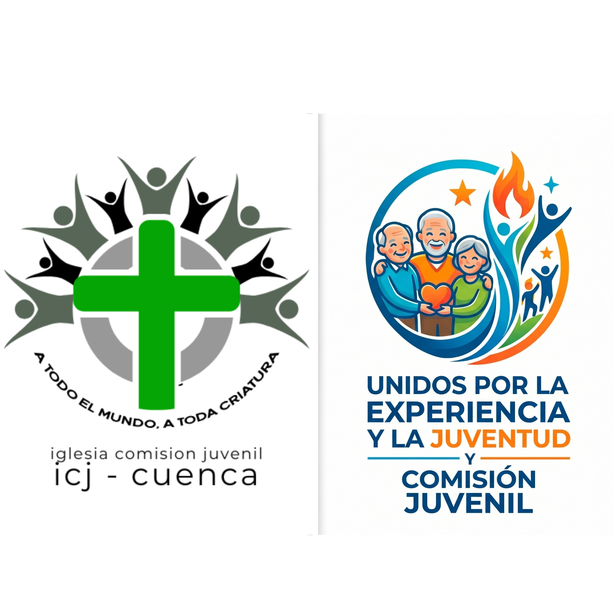
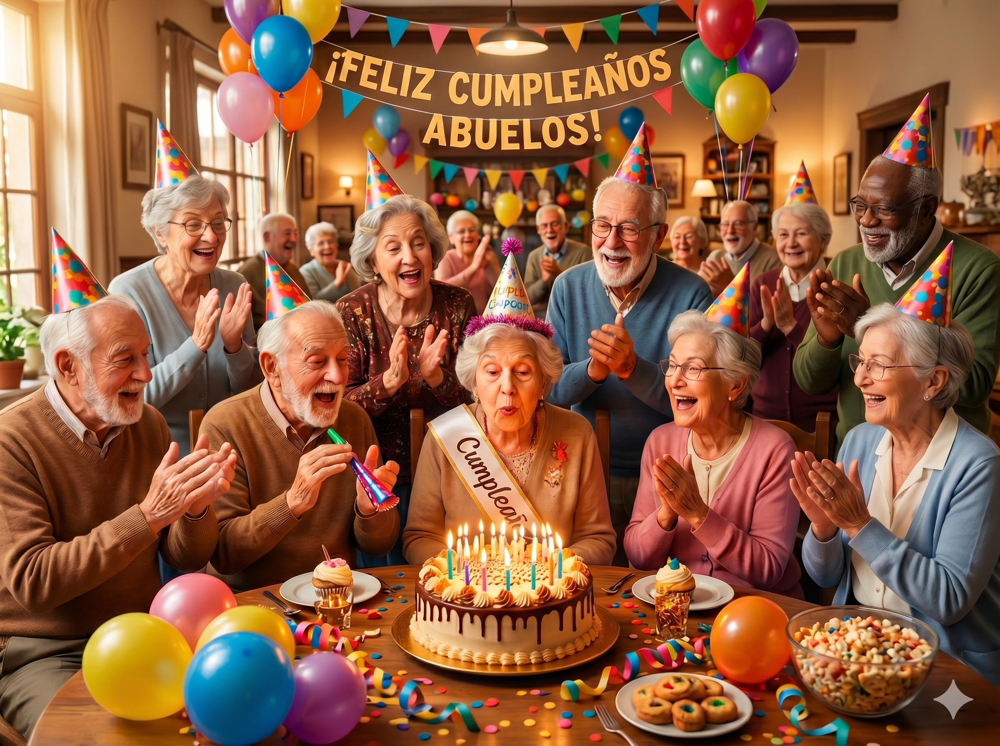
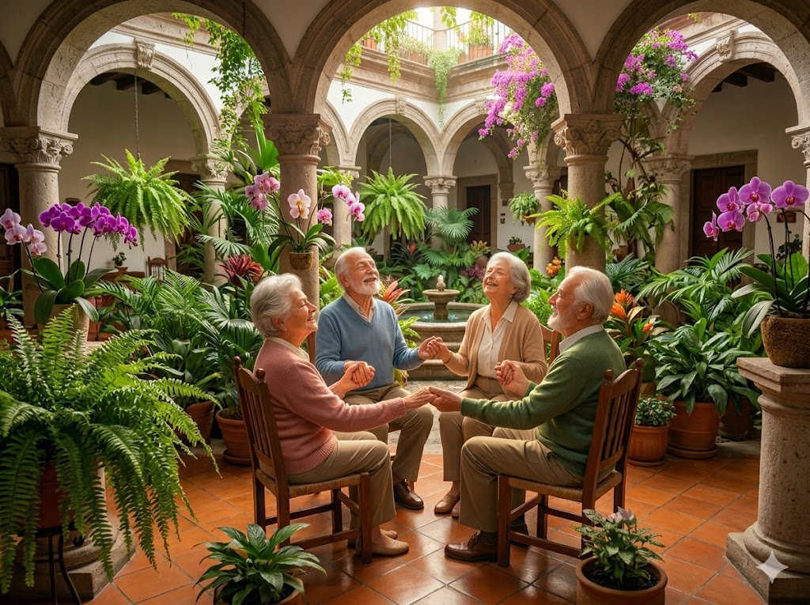

Celebrando la vida en el Hogar Miguel León

Plenitud nace del deseo de honrar a nuestros adultos mayores en Cuenca. Cada mes, transformamos una tarde ordinaria en una celebración de vida, fe y salud para los abuelitos del Hogar Miguel León.
Dinámicas con música para fomentar la movilidad y la alegría.
Refrigerios saludables con repostería artesanal sin cremas.
Un mensaje de esperanza y un tiempo de oración comunitaria.

Necesitamos voluntarios para música, apoyo en la logística o donación de insumos saludables.
Cómo ayudo